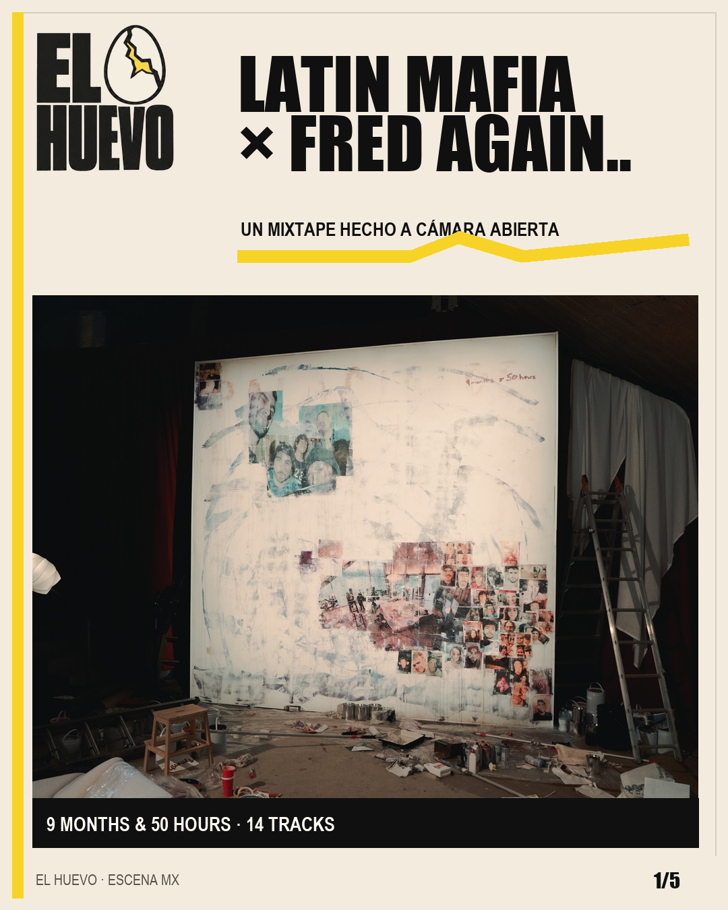
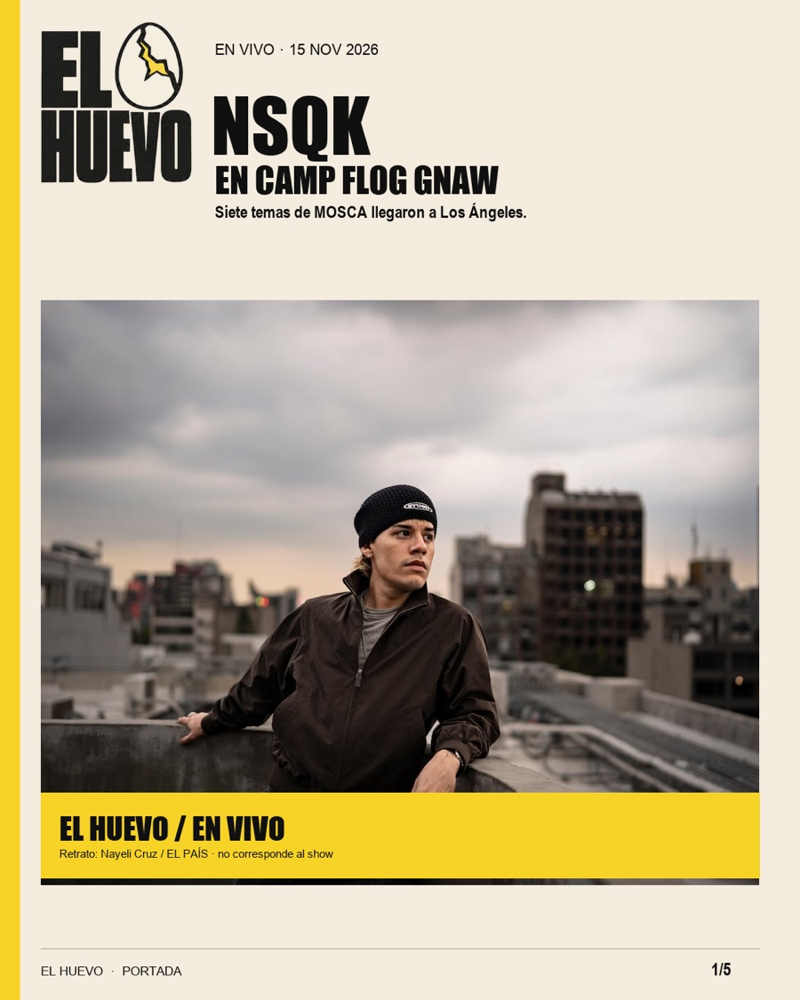
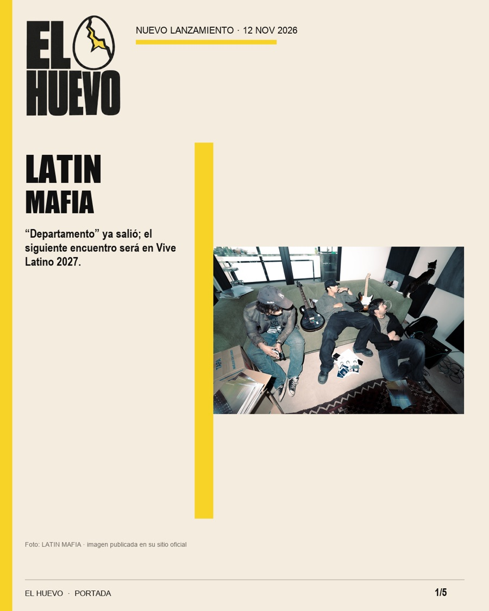
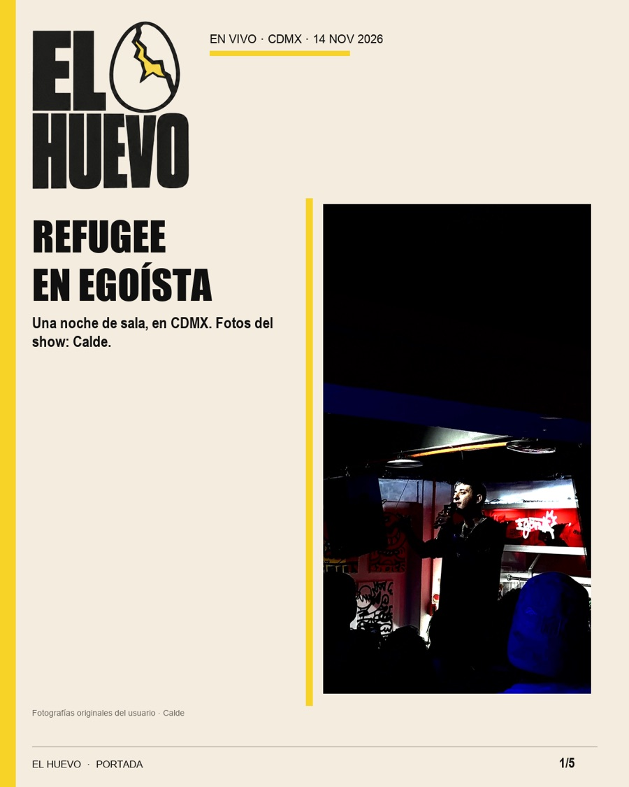
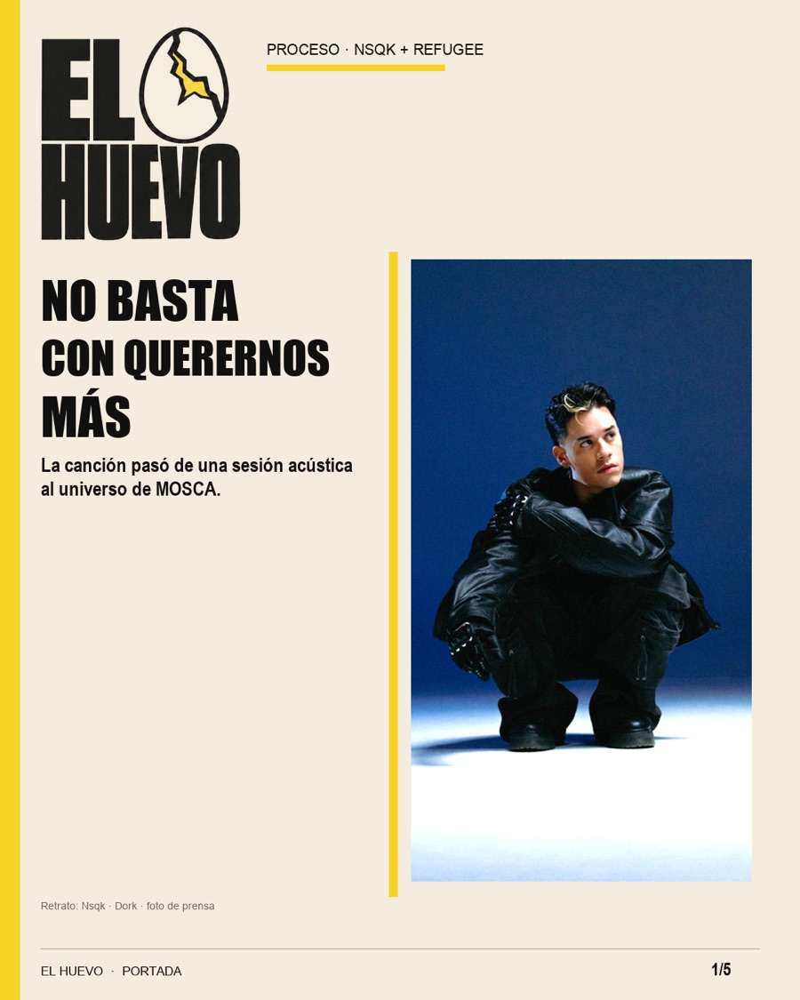
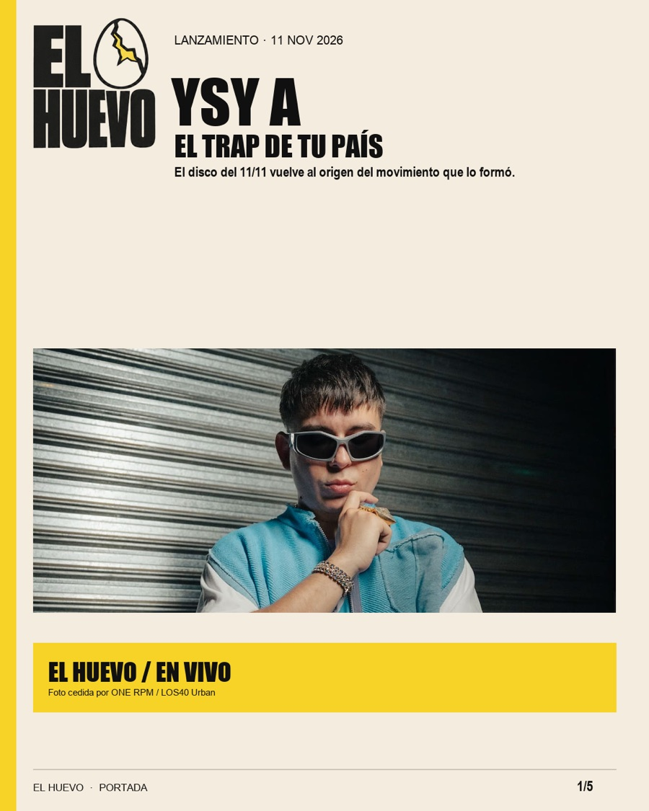

DE CERCA · NSQK
El origen de MOSCA
Kafka, una infestación y las ideas sobre ambición, ego y competencia que rodean el álbum.
Ver en InstagramHistorias, contexto y conversación alrededor de la música que nos mueve. Ocho publicaciones siguen el archivo de EL HUEVO, desde MOSCA hasta los lanzamientos y shows más recientes.
DE CERCA · NSQK
Kafka, una infestación y las ideas sobre ambición, ego y competencia que rodean el álbum.
Ver en Instagram
LANZAMIENTO · NINA MÍNGUEZ
En su nuevo lanzamiento, Nina Mínguez convierte una despedida en el deseo de regresar al principio y pedir un rato más.
Ver en Instagram
ENCUENTROS · MÚSICA
LATIN MAFIA y Fred again.. transmitieron desde LagoAlgo el proceso para terminar 9 months & 50 hours.
Ver en Instagram
EN VIVO · LOS ÁNGELES · 15 NOV 2026
Siete canciones de MOSCA entraron al set. Eslabón Armado se sumó a “Mil Problemas” y Jean Dawson a “Dientes De Fierro”.

LANZAMIENTO · 12 NOV 2026
El sencillo y su video oficial llegaron el 12 de noviembre. LATIN MAFIA también está confirmado como headliner del Vive Latino 2027.

EN VIVO · CDMX · 14 NOV 2026
El show de Refugee en Egoísta reunió al público frente al escenario de Niza 66. Las fotos de esa noche son de Calde para EL HUEVO.

PROCESO · NSQK + REFUGEE
“No Basta Con Querernos Más” ya había sonado en Spotify Sessions. En el álbum, NSQK y Refugee comparten el crédito de producción; el proceso creativo comenzó en un camp en Monterrey, según contó Nsqk.
Ver en Instagram
LANZAMIENTO · 11 NOV 2026
Publicado el 11/11, El Trap de Tu País pone el foco en las raíces del trap argentino y suma seis entregas documentales sobre su proceso.